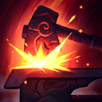
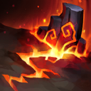

核心裝備
 騎士誓願
騎士誓願 錫柯的聚合之力
錫柯的聚合之力 黎明法衣
黎明法衣 荊棘之甲
荊棘之甲 好戰者鎧甲
好戰者鎧甲

以下為本站 7.2d 校正後的標準配置；實戰仍需依敵方陣容調整。


技能優先：W > Q > E

提高自身額外雙防，並可在地圖上打造裝備；達到特定等級後還能強化隊友購裝效率。

砸裂地面造成傷害與緩速，末端形成地形，可配合三技能撞出擊飛。
不可阻擋地向前噴火並施加焦化；觸發焦化可造成額外控制與傷害。
向指定方向衝撞，碰到地形時造成範圍擊飛，是鄂爾最主要的近身控制。
召喚火元素衝向自己並緩速焦化敵人；重施可將其撞回並大範圍擊飛。
1技造出岩柱 → 3技撞柱範圍擊飛 → 2技施加焦化 → 普攻觸發焦化控制 → 點燃限制回復
一技岩柱形成需要短暫時間，先預判敵方撤退路線，再以三技撞擊地形完成擊飛。
4技第一段召喚火元素 → 調整第二段回撞角度 → 4技第二段撞回擊飛 → 3技撞地形補控制 → 2技施加焦化
第一段先緩速與焦化，第二段回撞才是主要擊飛。保持自己與敵方核心、火元素大致成一直線。
1技在後排附近造地形 → 3技撞柱擊飛突進者 → 2技不可阻擋並掛焦化 → 普攻觸發控制 → 4技封鎖敵方後續支援
敵人切入時可利用自己的一技地形反開；大絕向外封鎖後續隊友，讓突進者與其團隊脫節。
用熾焰吹息的不可阻擋效果穿過部分控制並施加焦化，接普攻觸發額外控制。火山脈動末端會形成地形，可配合熔岩俯衝擊飛；對線不要為了造柱過度推線，先確認射手能跟上。活火爐讓鄂爾可在地圖上購買裝備，仍需選安全位置完成打造。
物件前先用一技地形與自身站位封住入口，敵人靠牆時三技更容易造成範圍擊飛。鑄火者的呼喚第一段用來緩速並施加焦化，第二段回撞負責大範圍擊飛；施放前確認路徑不會被牆體與位移角度破壞。
站在主力前方承受第一波傷害，利用焦化、三技與大絕形成長控制鏈。敵方刺客進場時可把一技地形放在後排附近，再用三技反開；主動開戰則從視野外召喚大絕。不要只追求撞中多人，優先控制能威脅射手的核心。
對局名單是本站依英雄機制與目前配置整理的參考，不等同固定勝率。
輔助調整以團隊承傷、解控與保護主力為優先，不為了單一敵人破壞整套功能裝。
觸發：敵方主要輸出集中在射手、物理刺客或普攻型英雄。
蘭頓之兆進一步降低暴擊傷害，適合第二層針對。
觸發：敵方主要威脅來自法師、AP刺客或大量範圍魔法傷害。
改走水星之靴→鎖鏈軍靴，補魔防、韌性與魔法護盾。
自然之力在連續承受魔法技能後能進一步降低魔法傷害。
觸發：敵方硬控能直接抓死己方主力，或你進場後會被連續控制。
改走水星之靴→鎖鏈軍靴，直接補韌性與魔防。
堅毅讓被控期間更耐打，適合前排承接第一波技能。
提醒：米凱主要替隊友解控；水星彎刀則是物理英雄自我解控，兩者角色不同。
觸發：敵方有大量治療、吸血或回復，讓己方集火很難完成擊殺。
標準配置已經有重創，不必重複購買。
觸發：己方只有一個主要輸出點，且敵方每波團戰都會集中切入他。
日輪的加冕提供即時群體護盾，補上騎士誓願以外的團隊保護。
提醒：保排調整看己方陣容，不是看到敵方刺客就把所有功能裝都換成防裝。
7.2a 輔助路最後 7 位正式攻略：依使用者提供的遊戲內輔助定位截圖，修正 v63 後仍殘留的賽特輔助定位，改為鄂爾輔助；技能名稱與鍛造、焦化及兩段大絕機制依 Riot Games 台灣《激鬥峽谷》鄂爾英雄頁校正。｜v74：套用瑟雷西 v69 輔助固定母版。
本站於 2026-08-27 依 Patch 7.2d 重新檢查此配置。 Tier、出裝、符文與對局屬於 Wild Rift Guide 的整理與分析，不是 Riot Games 官方推薦；版本改動後會再依官方公告與實戰資料校正。